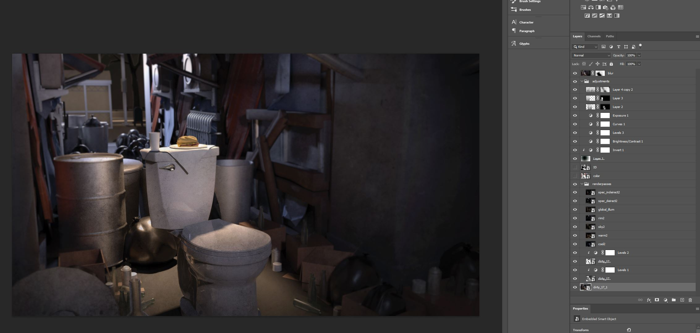
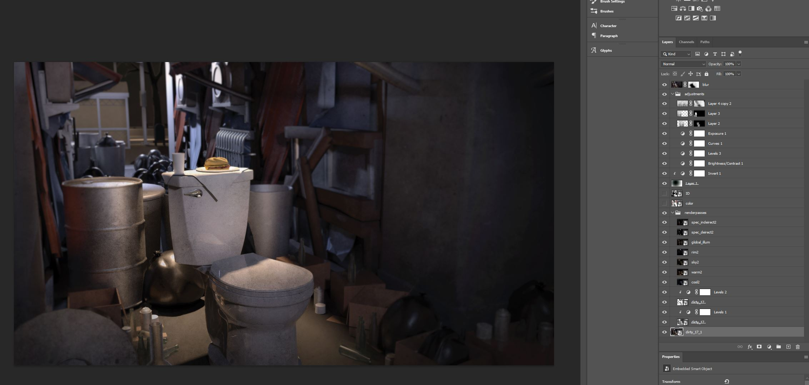

3D Art & Aesthetics Week 7 Midterm, Breakfast of Champions
 After compositing the layers together and adjusting it a bunch I added some other things to try and bump it up a bit. Luckily the project is just a single render so I just did some photoshoping to get some dirt texture on it. I really didn't feel like uving and texturing all those props. In the end, I think I'm pretty happy with my result, and will probably put it in my portfolio.

After compositing the layers together and adjusting it a bunch I added some other things to try and bump it up a bit. Luckily the project is just a single render so I just did some photoshoping to get some dirt texture on it. I really didn't feel like uving and texturing all those props. In the end, I think I'm pretty happy with my result, and will probably put it in my portfolio.

home
while (!deck.isInOrder()) {
print 'Iteration ' + i;
deck.shuffle();
i++;
}
print 'It took ' + i + ' iterations to sort the deck.';